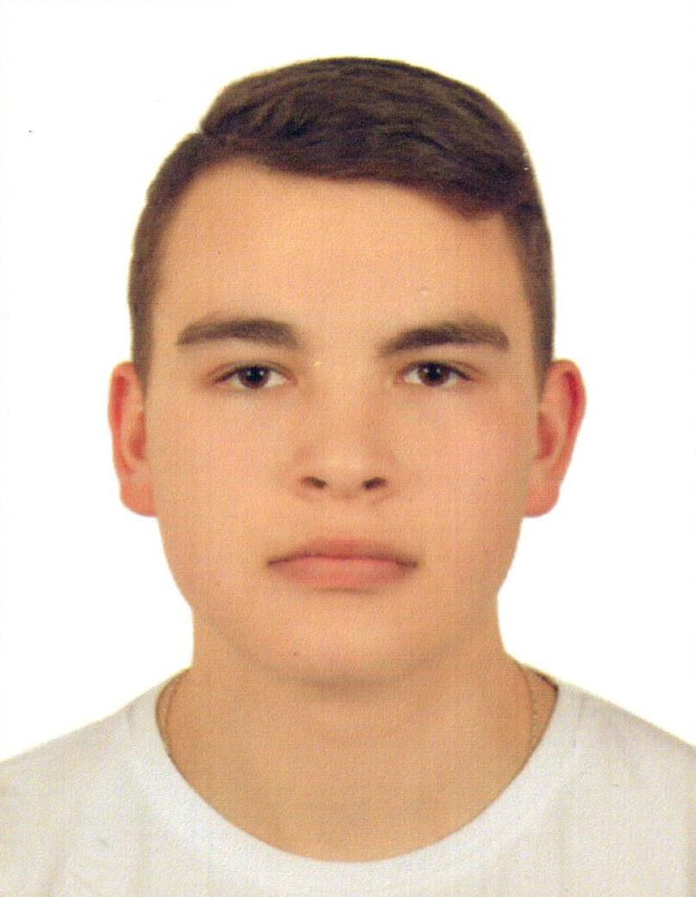

Junior Front-end Developer
I'm an enthusiastic and detail-oriented Frontend Software Engineer seeking an entry-level position with Company to use my skills in coding, troubleshooting complex problems, and assisting in the timely completion of projects.
Національний університет "Львівська політехніка", 2014-2021, Мікро- та наносистемна техніка